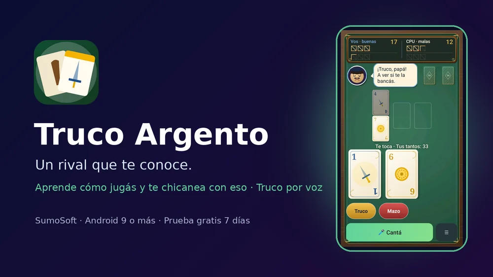
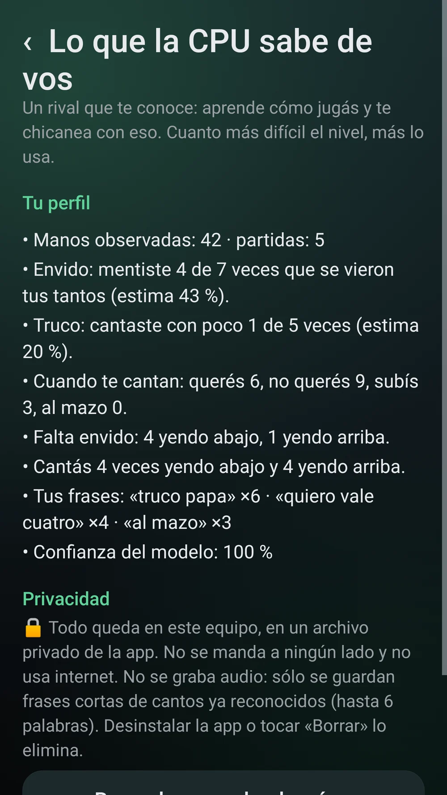
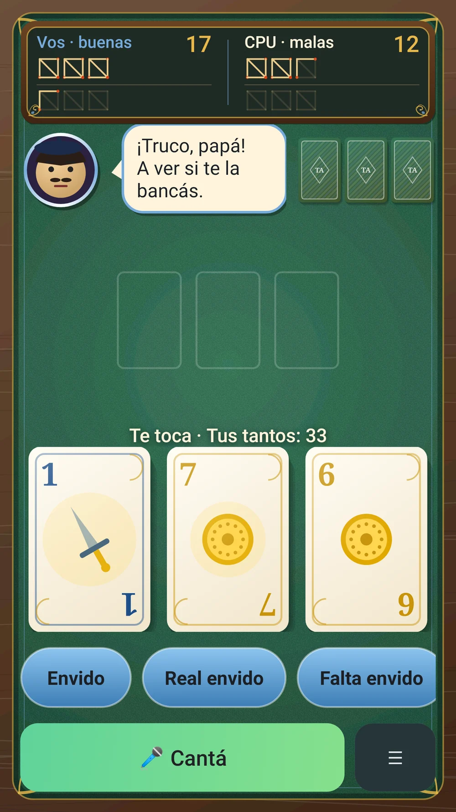
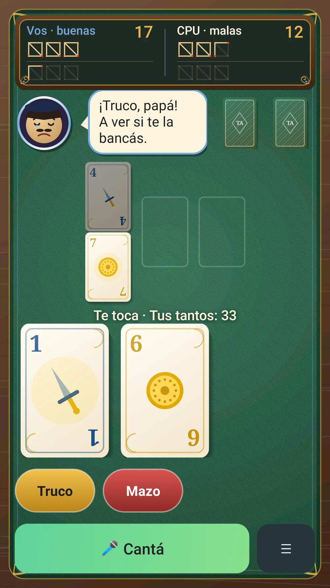
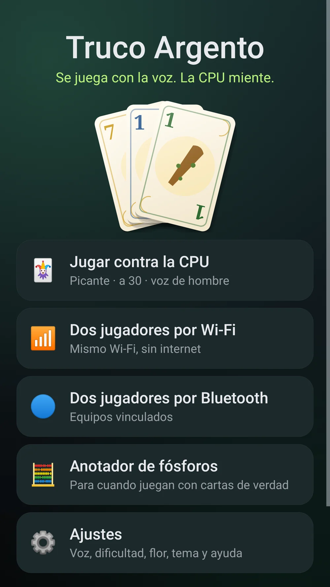
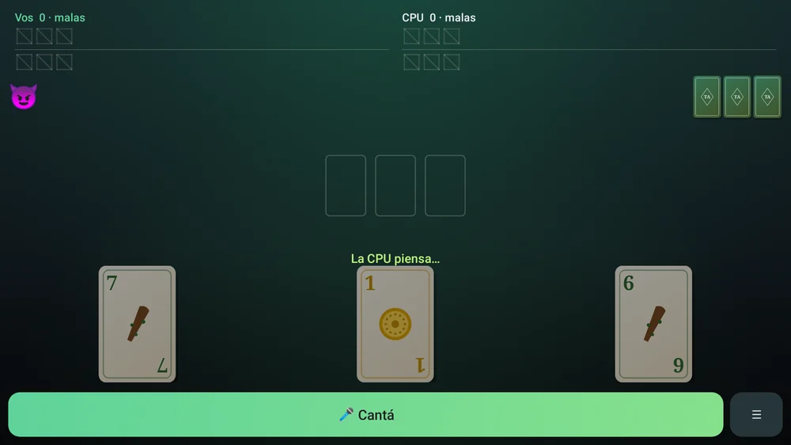
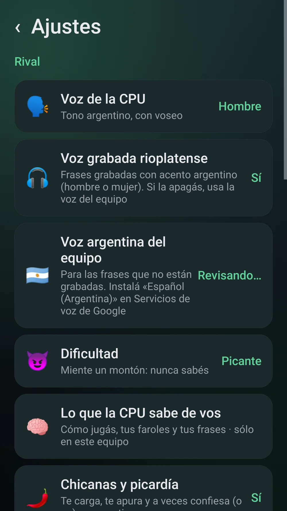
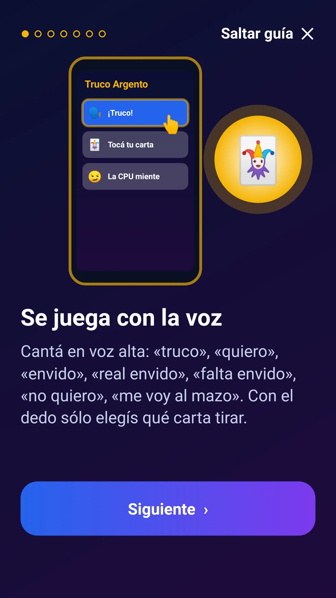

Truco Argento
Un rival que te conoce: truco por voz contra una CPU que aprende cómo jugás, miente y te chicanea con eso.
Un rival que te conoce: aprende cómo jugás y te chicanea con eso.
Privacidad: el perfil que arma la CPU («Lo que la CPU sabe de vos») queda sólo en tu equipo, no usa internet y se borra con un botón o al desinstalar; no se graba audio, sólo frases cortas de cantos ya reconocidas. Micrófono: la app pide el permiso de micrófono para entender tus cantos. El reconocimiento lo hace el servicio de voz de tu equipo (normalmente Google); según el equipo puede funcionar sin internet o necesitar conexión. La app no graba ni guarda audio. En TV box sin micrófono en el control se juega con los botones. Bluetooth pide el permiso «Dispositivos cercanos» en Android 12 o más. Dos jugadores no usa servidores: los equipos se hablan directo en tu red. No fue probada todavía en todos los equipos.
Para celulares Android 9 o más nuevos y Android TV / TV box con Android 9 o más.
Sin publicidad. Nunca.Pagás una vez y la app es tuya: sin banners, sin videos que te hacen esperar, sin interrupciones. Por qué cobramos


Un rival que te conoce Lo que la CPU sabe de vos (y podés borrar)
Lo que la CPU sabe de vos (y podés borrar)

La mesa: tus cartas y el rival que te carga

Respondé con la voz o con los botones

Contra la CPU o mano a mano

Anotador de fósforos (sorpresa)

Voz, dificultad, flor y temas

En la TV, con el control

Se juega con la vozLo que la hace distinta
- 🧠 Te conoce: recuerda tus faroles, tus achiques y tus frases, y te las echa en cara.
- 🔒 Lo que aprende queda en tu equipo: sin internet, y lo borrás cuando quieras.
- 🗣️ Se juega cantando: la app te escucha.
- 😈 La CPU miente al azar: nunca sabés si tiene.
- 🇦🇷 Voz con tonada y muletillas argentinas.
- 📶 Mano a mano por Wi-Fi o Bluetooth, sin internet.
- 📺 El mismo APK en el celular y en la TV.
- 🔥 Anotador de fósforos de regalo.
- 🚫 Sin publicidad. Nunca.
Qué es
Un rival que te conoce: la CPU aprende cómo jugás (cuándo mentís en el envido o en el truco, si te achicás o siempre subís, si cantás falta cuando venís perdiendo y hasta tus frases de siempre) y te chicanea con eso: «vos siempre cantás falta cuando venís perdiendo», «otra vez con tu frase de siempre». Lo que aprende queda sólo en tu equipo, sin internet, y lo podés ver y borrar en «Lo que la CPU sabe de vos». Es el truco argentino clásico, pero se juega con la voz: cantás «truco», «quiero retruco», «envido», «real envido», «falta envido» o «me voy al mazo» en voz alta, y con el dedo sólo elegís qué carta tirar. La CPU te contesta hablando con tonada argentina (voz de hombre o de mujer, a elección), te carga, te apura y miente: a veces canta truco con basura y a veces se hace el muerto con el ancho, así nunca sabés. Cuatro dificultades, partidas a 15 o a 30 con malas y buenas, flor opcional, y mano a mano entre dos equipos por Wi-Fi o Bluetooth, sin internet. Y de regalo, un anotador de fósforos para cuando juegan con cartas de verdad.
Qué hace
- Un rival que te conoce: partida a partida, la CPU arma un perfil tuyo (cuánto mentís en el envido y en el truco, cuántas veces no querés o te vas al mazo y cuántas subís, si cantás falta cuando venís perdiendo, y las frases cortas que más usás al cantar). Lo usa para decidir en todos los niveles (más cuanto más difícil) y para chicanearte con eso. En Ajustes → «Lo que la CPU sabe de vos» ves todo y lo borrás con un botón.
- Jugás al truco contra la CPU: cantás en voz alta (truco, retruco, vale cuatro, envido, real envido, falta envido, flor, quiero, no quiero, me voy al mazo) y tocás la carta que querés tirar.
- La CPU habla con voz (hombre o mujer, en Ajustes), usa muletillas y chicanas, y miente al azar según la dificultad: Tranqui, De boliche, Picante o Maestro de esquina.
- Reglas completas: pardas, «el envido está primero», falta envido (en las malas gana el partido), flor y contraflor opcionales, al mazo.
- Dos jugadores: un equipo crea la partida y el otro se une, por Wi-Fi (misma red) o por Bluetooth (equipos vinculados). No usa internet.
- Anotador de fósforos: para partidas con cartas de verdad; se anota tocando o diciendo «dos para nosotros».
Requisitos
- Celular Android 9 o más nuevo, o Android TV / TV box con Android 9 o más
- Micrófono y reconocimiento de voz de Google (si no hay, se juega con los botones)
- Para dos jugadores: mismo Wi-Fi, o Bluetooth con los equipos vinculados
Funciones
- 🧠 Un rival que te conoce: aprende cómo jugás y te chicanea con eso (todo queda en tu equipo)
- Se juega con la voz: cantás y la app entiende (con botones de respaldo)
- Rival con voz argentina, de hombre o de mujer
- La CPU miente: faroles al azar, nunca sabés si tiene
- Reglas completas: truco, retruco, vale cuatro, envido, real envido, falta envido, flor opcional, mazo
- A 15 o a 30 con malas y buenas, tanteador con fósforos
- Dos jugadores por Wi-Fi o Bluetooth, sin internet
- En la TV con el control remoto
- Anotador de fósforos por voz para partidas de verdad
Cómo se instala
- Descargá el APK e instalalo (si Android pregunta, permití instalar desde el navegador). Es el mismo APK para el celular y la TV.
- Abrila, mirá la guía y permití el micrófono (sólo se usa mientras jugás; no se graba nada).
- En Ajustes elegí la voz del rival (hombre o mujer) y la dificultad. Para comprar: «Activar» → «Comprar con Mercado Pago».
Novedades
- 1.1.0 — Un rival que te conoce: la CPU aprende cómo jugás (faroles, achiques, subidas, falta cuando venís perdiendo y tus frases) y te chicanea con eso. Nueva pantalla «Lo que la CPU sabe de vos» con botón para borrar. Todo queda en tu equipo.
- 1.0.0 — Primera versión.